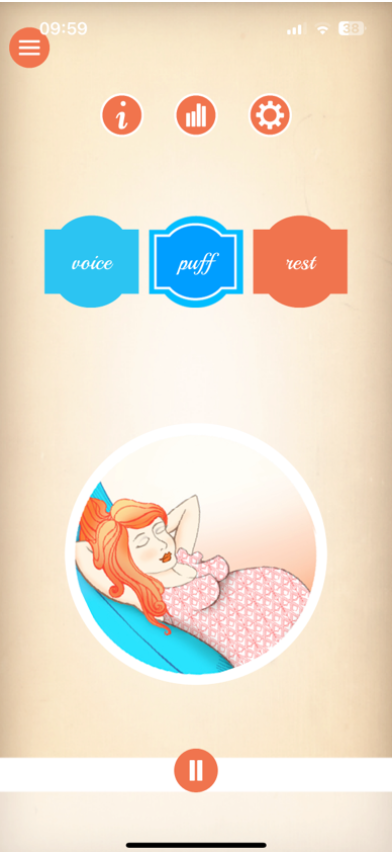
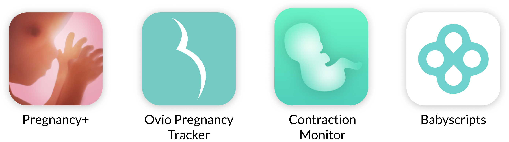
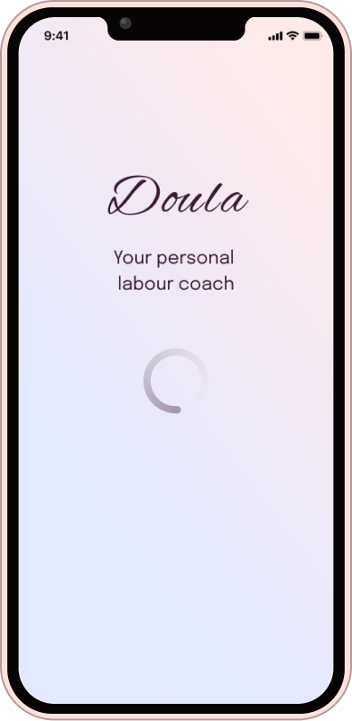
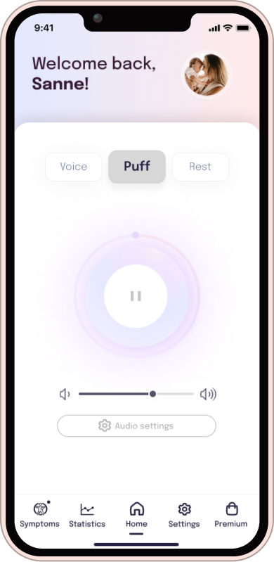
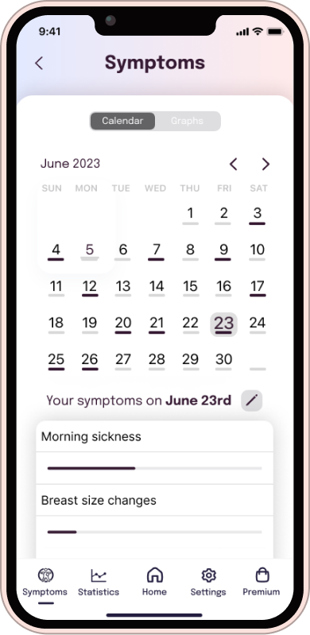

Design Brief
Doula is a pregnancy app which provides audio guidance in the final phase of pregnancy for managing the pain during contractions. Additionally, users can view statistics of their contractions. The app is missing a symptom tracker that expectant mothers can use to log their symptoms and monitor changes throughout their pregnancy.
Additionally, the visual style of the app is outdated and not very engaging. Users have also reported feeling disconnected from the app and are looking for a more personal and supportive experience.

User Research
While my ideal approach would involve in-depth user interviews, think-aloud sessions, and data analytics, the 10-hour time limit was the greatest rival. So, I pivoted, focusing on understanding our audience: expectant mothers and their incredible doulas.
These doula superheroes offer emotional support, information, physical comfort, advocacy, continuous presence, and postpartum care. I dived into uncovering what expectant mothers need during the final phases of pregnancy, including emotional reassurance, information, comfort, advocacy, continuous presence, and postpartum preparation.
But that's not all – I delved into understanding pregnancy symptoms, diligently cataloging the essentials that expectant mothers often want to track, from weight gain and morning sickness to mood changes and fetal movements.
User Reviews
User feedback for the Doula app in the App Store and Google Play Store paints a mixed picture. Many users express positivity, finding it comforting during labor. However, challenges exist, including occasional freezing or crashing issues. Some appreciate the free features, while others express frustration over in-app purchases.
"Seems a bit too basic and no general walk-through. Everything is for purchase or "do this task to access content" nice option. The music is nice but I wish there were better options."
✩✩✩✩ - May 27, 2021
"I both love and hate this app.i tested it before my labour and liked the sounds so was happy to use it. However I didn't let it run long enough so didn't test it properly. when it came to labour I was listening to it but every time or got to the end of the audio it crashed and closed the app which infuriated me as I was in agony."
✩✩✩ - March 24, 2019
Competitor Analysis
In the world of pregnancy and labor support apps, you'll find a range of options. Some, like the Contraction Timer & Counter and Full Term - Labor Contraction Timer, focus solely on tracking contractions with no audio coaching or music features. Others, such as Pregnancy+ and Ovia Pregnancy Tracker, offer comprehensive pregnancy tracking and information but lack dedicated contraction coaching. Additionally, there are wearable devices like Bloomlife for real-time contraction tracking, while apps like Mama Natural Birth Course prioritize childbirth education and natural birth support over contraction tracking.

Usability Test (Jakob Nielson's 10 Principles of Interaction Design)
- Visibility of System Status: The app provides clear feedback on the homescreen but lacks loading indicators in certain areas, potentially causing confusion.
- Match Between System and the Real World: The app effectively uses familiar language and concepts, avoiding confusing jargon.
- User Control and Freedom: Users may encounter challenges in undoing actions, with a lack of clear exit options, potentially leading to data loss.
- Consistency and Standards: The app does not consistently follow established OS guidelines, leading to inconsistencies in design and icon placement.
- Error Prevention: While structurally clean, the use of fancy fonts in instructions may reduce readability and increase the chance of users skipping important information.
- Recognition Rather Than Recall: Inconsistent icon usage and placement make it challenging for users to remember information across different parts of the interface.
- Aesthetic and Minimalist Design: The outdated and inconsistent design, including long instructional texts and color choices, hinders user experience and readability.
- Help and Documentation: While some help is available, its effectiveness is limited due to other design issues within the app.
User Story (Example)
“As an expectant mother, I want to easily track my pregnancy symptoms and monitor
changes throughout my pregnancy using the Doula app, so I can receive personalized
support and feel more connected to the app's features and content.”
Acceptance Criteria:
- Given that I am using the Doula app, when I open the app, I should be presented with a
clear and inviting home screen.
- When I want to log my pregnancy symptoms, I can navigate to the new "Symptom
Tracker" feature from the home screen.
- In the "Symptom Tracker," I should see a user-friendly interface with options to log
common symptoms such as morning sickness, fatigue, cramping, and more.
- Each symptom should have a dedicated input field for recording its severity or
frequency.
- I should be able to add additional notes or comments related to each symptom if I
choose to.
- The app should allow me to save and date-stamp my symptom entries.
- Once I've logged my symptoms, I can easily access a history or log of my previous
entries for reference.
Updating the visual style
I overhauled the color schemes, typography, and iconography to create a visually captivating and modern interface that resonates with the app's purpose. By employing a clean color palette with soothing gradients and harmonious shades, I directed users' attention towards vital content.
I struck a balance between playful branding elements and professional clarity by adopting a clean and neutral font for instructional text, aligning with iOS guidelines. Additionally, I adhered to iOS standards for iconography, placing them in a user-friendly nav-bar at the bottom for intuitive navigation, ensuring users always know their location within the app. Consistency reigns supreme across screens, unifying typography, color coding, and iconography for a seamless user journey.


Improving the homescreen
The redesigned homescreen not only embodies Doula's new visual identity but also offers a dynamic 'pulsing' play button, evoking the essence of breathing techniques within Mary's instructions. Users are now greeted with personalized messages and customizable profile pictures, making the app feel uniquely theirs.
I've introduced a handy volume control panel, allowing users to tailor their audio experience, while a user-friendly nav-bar at the bottom ensures quick access to the app's full functionality. To make the symptom tracker more engaging, a notification icon encourages users to log their daily symptoms, enhancing their overall experience. Plus, I've incorporated a dedicated premium package screen, addressing user preferences for a simplified payment model.
Symptom tracker feature
I introduced a user-friendly symptom tracker to the app, enabling users to log and monitor their pregnancy symptoms, rate their severity, and add notes. Users are prompted to input their daily symptoms, and only the 'Save' button becomes active once at least one symptom is selected, ensuring data accuracy. The tracker offers a calendar view with color-coded bars for symptom submissions and a graph displaying symptom progression over time, enhancing users' ability to visualize their pregnancy journey.Additionally, I added a back-button on all non-home screens, providing users with a convenient way to return to the home screen without data loss, addressing a missing feature from the original app.
